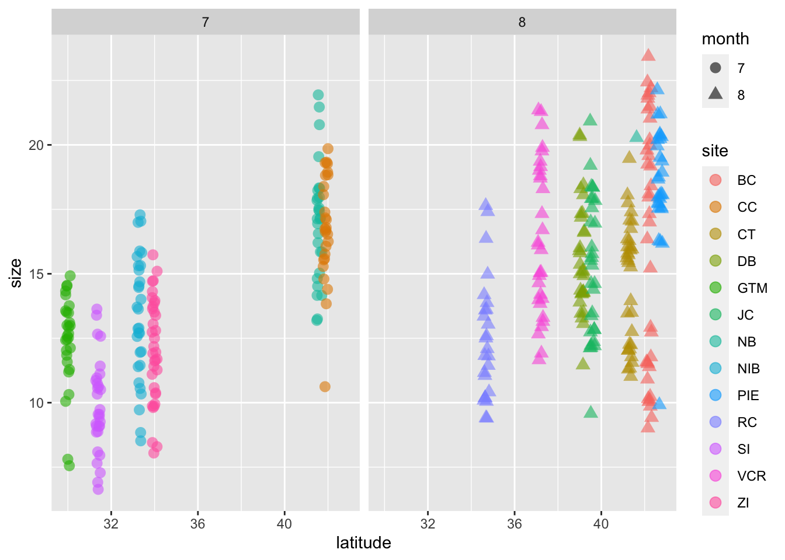
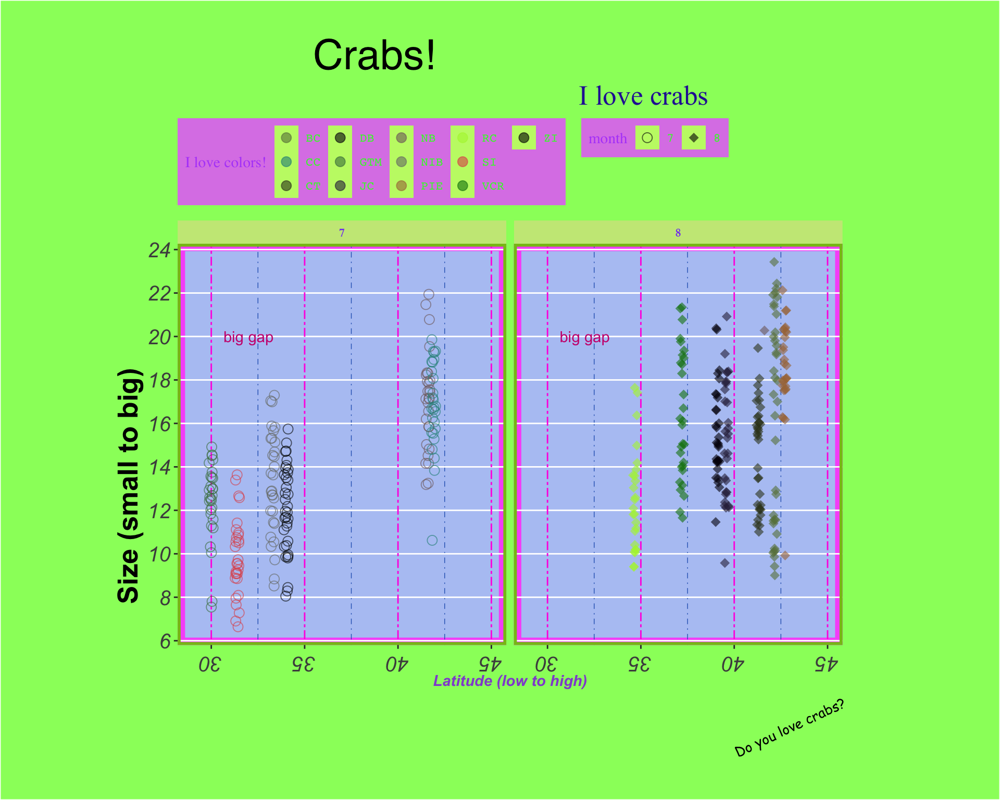
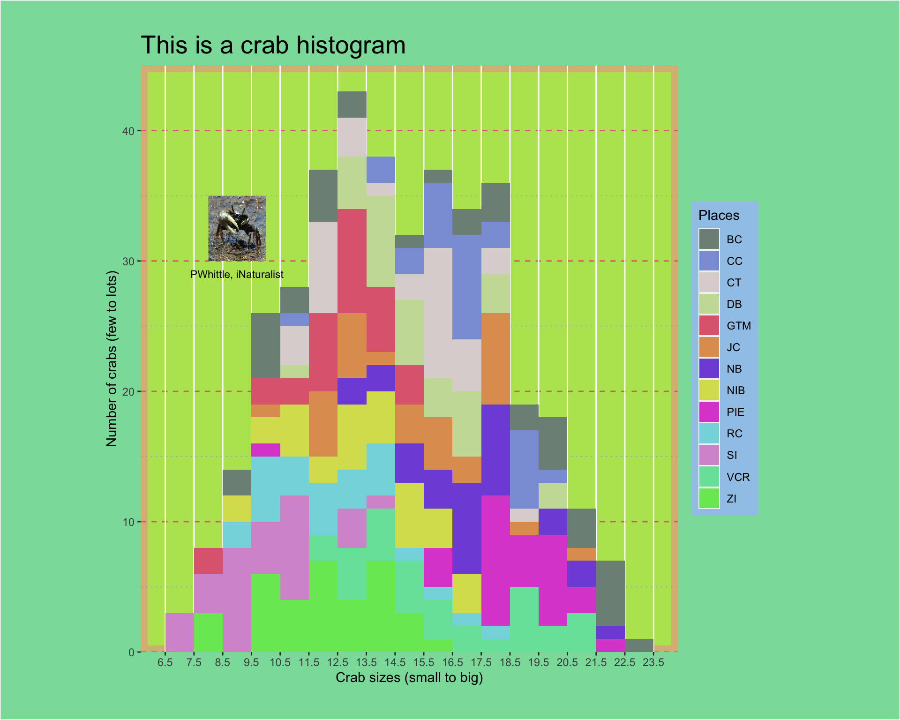
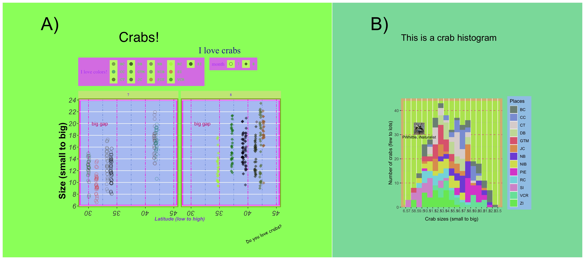

# general use
library(tidyverse) # general tidying and visualization: ggplot is loaded by default with tidyverse
library(lterdatasampler) # data we're using comes from this package
library(lubridate) # working with dates
library(here) # folder organization
# extras
library(patchwork) # arranging plots
library(magick) # putting images into ggplotsFigure making in ggplot
What we’re doing today
In the spirit of Emily Riederer’s ugliest ggplot ever, we’ll play around with ggplot code in order to learn how it works. The goal: make the ugliest plot possible.
Set up
We’ll load in our packages below:
Note: lterdatasampler has to be installed from the GitHub repo using the code below (copy, paste, and run in the console):
remotes::install_github("lter/lterdatasampler")Today, we’ll use the Plum Island fiddler crab data from lterdatasampler to visualize relationships between latitude and crab size. Read the linked vignette to learn about Bergmann’s rule!
The Plum Island LTER has a data set of crab sizes (column size) from Summer 2016 at 13 different marshes spanning 12 degrees latitude. A sample is below, but try View(pie_crab) in the console to see the whole data frame.
pie_crab %>%
slice_sample(n = 5)# A tibble: 5 × 9
date latitude site size air_temp air_temp_sd water_temp water_…¹ name
<date> <dbl> <chr> <dbl> <dbl> <dbl> <dbl> <dbl> <chr>
1 2016-08-09 37.2 VCR 16.2 15.0 8.41 17.6 8.43 Virg…
2 2016-08-12 42.2 BC 11.8 11.6 9.53 14.0 6.9 Bare…
3 2016-07-26 31.4 SI 13.4 20.8 7.41 22.1 6.50 Sape…
4 2016-08-12 42.2 BC 20.2 11.6 9.53 14.0 6.9 Bare…
5 2016-08-07 39.1 DB 13.9 13.9 9.96 15.7 9.12 Dela…
# … with abbreviated variable name ¹water_temp_sdJust to make things a little more interesting, I’m going to split up the dates into years, months, and days and save that as a new data frame, crab_data.
crab_data <- pie_crab %>%
# extracting month from the date column using lubridate::month()
# also making this a factor (instead of numeric) using as.factor()
mutate(month = as.factor(month(date)))ggplot grammar
ggplot works in layers. The code to make a plot can vary, but always includes:
1. the ggplot() call: this tells R that you want to use the function ggplot() in ggplot to plot things.
2. data and aesthetics within that ggplot() call: tells ggplot to use a specific data frame any variables in that data frame that should be represented in the plot (for example, x- and y- axes, colors, shapes)
3. a geom_(): short for “geometry”, geom_() calls tell ggplot what kind of plot you want to make. Try ?geom_ in the console to see the different options.
# step 1: call ggplot
ggplot(
# step 2: specify the data and the aesthetics
# plotting latitude on the x-axis and crab size on the y-axis
data = crab_data, aes(x = latitude, y = size)) +
# step 3: specify a geom - in this case, we're creating a scatter plot
geom_point()
Note that when you’re adding on layers in ggplot, you’ll use the + instead of the %>% operator. This is because ggplot() is the function call, but everything else you add on is a modifier of the ggplot() plotting function (instead of a new function doing something different).
So we’ve just made this plot. But how can we make it worse?
ggplot() takes aesthetics from the data frame, so I’m going to color the points by site and make the shapes represent month. I’m also going to make a jitter plot, which is a scatter plot with the points “jittered”, or randomly shaken up so that it’s easier to see the overlap (or be chaotic). I’m also going to facet the plot by month using facet_wrap(), which is a useful function when you’re trying to see differences between variables in different panels (or you can use facet_grid(), which does essentially the same thing).
ggplot(data = crab_data, aes(x = latitude, y = size)) +
# putting the aesthetics in here: color points by site, shape points by month
geom_jitter(aes(color = site, shape = month),
# anything that doesn't have to do with variables (like point size or transparency) goes outside the aesthetics
size = 3, alpha = 0.6) +
# facet by month
facet_wrap(~ month)
Wow! This plot is getting worse to look at. But we can do better.
Adjustments to ggplot defaults
Manual selections
You can adjust the colors, shapes, axis limits, etc. using one of the scale_ functions (try ?scale_ to see the many options).
Themes
A lot of customization comes from ggplot themes. Theme elements deal with everything else in the plot that doesn’t have to do with the data (e.g. the plot background, grid, etc.). There are a lot of arguments that you can stack up in theme() (try ?theme()) to see all of them, but they generally fall into a few categories: 1. axes, 2. legends, 3. panels, 4, plots, 5, strips. There are built-in themes in ggplot that can make your plot look pretty good right away, but playing around with theme elements yourself is a great way of getting the exact plot you want.
Additionally, every argument takes a function modifying the elements: 1. lines, 2. rectangles (more broadly, shapes), 3. text. See the help pages for these functions (e.g. ?element_text()) to figure out what you can alter about each element - there’s a lot!
Annotations
Annotations are useful when you want to point something out on a plot. The function is annotate(), which adds an annotation layer onto your plot.
Labels
Lastly, you can adjust any text on labels using the labs() function.
Note: all the code in the theme below comes from Emily Riederer’s gist, with some modifications!
crab_plot <- ggplot(data = crab_data, aes(x = latitude, y = size)) +
geom_jitter(aes(color = site, shape = month), size = 3, alpha = 0.6) +
facet_wrap(~ month) +
# scaling
# changing point colors + assigning each to a site
scale_color_manual(values = c("BC" = "#687f47", "CC" = "#268e86", "CT" = "#373f1f",
"DB" = "#03010a", "GTM" = "#447c49", "JC" = "#2e2747",
"NB" = "#7f696a", "NIB" = "#777a76", "PIE" = "#a87445",
"RC" = "#aef23a", "SI" = "#e05357", "VCR" = "#087f0c",
"ZI" = "#010201")) +
# changing the point shapes
scale_shape_manual(values = c("7" = 21, "8" = 18)) +
# changing x and y axis limits and breaks
scale_x_continuous(limits = c(29, 45)) +
scale_y_continuous(n.breaks = 10) +
# theme() call
theme(
# panel: anything having to do with the main area
panel.background = element_rect(fill = '#B5C7F4', color = '#F761F9', linewidth = 5),
panel.border = element_rect(fill = NA, color = "#87Bf18", linewidth = 2),
panel.grid.major.x = element_line(color = "#FF21E1", linetype = 6),
panel.grid.minor.x = element_line(color = "#2D65BF", linetype = 4),
panel.grid.minor.y = element_blank()
) +
# another theme() call: you don't have to split things up like this
# just doing it for ease of demonstration
theme(
# plot: anything having to do with the area around the panel
plot.background = element_rect(fill = "#98FC6A"),
plot.title = element_text(size = 30, hjust = 0.25, family = "Helvetica"),
plot.subtitle = element_text(size = 20, hjust = 0.75, color = "#2A23A3", family = "Times New Roman"),
plot.caption = element_text(size = 10, angle = 25, family = "Comic Sans MS"),
plot.margin = unit(c(1, 4, 1, 3), "cm")
) +
theme(
# axes: anything having to do with the x- and y- axes
axis.title.x = element_text(face = "bold.italic", color = "#9254D3"),
axis.title.y = element_text(family = "Arial", face = "bold", size = 20, hjust = 0.25),
axis.text = element_text(face = "italic", size = 15),
# note that axis.text options from above are inherited
axis.text.x.bottom = element_text(angle = 180)
) +
theme(
# strips: anything having to do with the facet titles
strip.background = element_rect(fill = "#C9E886"),
strip.text = element_text(color = "#854EED", family = "Garamond", face = "bold")
) +
theme(
# legend: anything having to do with the legend
legend.background = element_rect(fill = "#DC86E8"),
legend.key = element_rect(fill = "#C2F774"),
legend.direction = "horizontal",
legend.position = "top",
legend.justification = "left",
legend.title = element_text(family = "serif", color = "#B452F9"),
legend.text = element_text(color = "#30F92C", family = "mono")
) +
# annotate: big gap
annotate(geom = "text", x = 32, y = 20, label = "big gap", color = "#CC107D") +
# labs: anything having to do with labels
labs(title = "Crabs!",
subtitle = "I love crabs",
x = "Latitude (low to high)",
y = "Size (small to big)",
caption = "Do you love crabs?",
col = "I love colors!")
crab_plot
The last thing we’ll do is save the plot using ggsave(). The function needs you to tell it what the file name is in the first argument filename, but I’ll show you a little trick I use to 1) save the figure in a folder and 2) “version” the figure based on date (i.e. the file name for the figure has the date it was made in it). Both are extraneous, but things I like to do to keep my figures organized.
ggsave(
# specify a file name, but here we'll specify a file path
# choose the folder named "figures"
filename = here::here("figures",
# create a file name that includes the date using lubridate::today()
# you could also use Sys.Date() - works the same way!
paste("crab_plot_ugly_", today(), ".jpg", sep = "")),
# name the plot object you're wanting to save
plot = crab_plot,
# specify the dimensions and units
width = 10, height = 5, units = "in",
# specify resolution
dpi = 300
)Extras
Adding images to plots
There are many ways of adding images to plots. The package I’ll use is magick. This is a round-about way of getting an image in, but allows you to be flexible with your image types (gifs, etc.). I’ll just save this as an object called crab_image to use later.
# use magick::image_read() to read in the jpeg
crab_image <- image_read(here::here("code", "pwhittle-fiddler-crab.jpeg")) %>%
# turn this into a raster
as.raster()Putting plots together
There are a couple packages you can use to put plots together like panels in a figure. The big ones are patchwork and cowplot. Try each of them out and see what you like, but we’ll be using patchwork today.
Just to demonstrate how this works, I’m going to make up a histogram of crab sizes. The code is annotated if you’re interested in the customized aesthetics, but they’re not important for this demonstration.
# for a histogram, you don't need y in your aesthetic call
crab_hist <- ggplot(crab_data, aes(x = size)) +
# telling ggplot that you want to plot a histogram
geom_histogram(binwidth = 1, aes(fill = site)) +
# some scaling
scale_x_continuous(breaks = seq(from = 6.5, to = 24.5, by = 1)) +
scale_y_continuous(limits = c(0, 45), expand = c(0, 0)) +
scale_fill_manual(values = c("BC" = "#7D9084", "CC" = "#8B9FD9", "CT" = "#DDD5D5",
"DB" = "#CADDA5", "GTM" = "#DF697F", "JC" = "#E09E5F",
"NB" = "#7F56DB", "NIB" = "#D8DF5D", "PIE" = "#DC53D3",
"RC" = "#84D9DF", "SI" = "#D798D1", "VCR" = "#77E2A8",
"ZI" = "#76E762")) +
# some theme-ing
theme(
panel.background = element_rect(fill = '#B6E45F', color = '#DABA84', linewidth = 5),
panel.grid.minor.x = element_blank(),
panel.grid.major.y = element_line(color = "#E16B86", linetype = 2),
panel.grid.minor.y = element_line(color = "#B49CD2", linetype = 3),
legend.background = element_rect(fill = "#A0C8E8"),
plot.background = element_rect(fill = "#8ADDA8"),
plot.title = element_text(size = 20),
plot.margin = unit(c(1, 4, 1, 3), "cm")
) +
# some labeling
labs(x = "Crab sizes (small to big)",
y = "Number of crabs (few to lots)",
title = "This is a crab histogram",
fill = "Places") +
# adding the crab image
annotation_raster(crab_image, xmin = 8, xmax = 10, ymin = 30, ymax = 35) +
# annotating the plot with the photographer credit
annotate(geom = "text", x = 9, y = 29, label = "PWhittle, iNaturalist", size = 3)
crab_hist
patchwork thinks similarly to ggplot in that it takes things in layers with + signs, but also takes &. To be honest, I can’t remember the rules most of the time and I have to look them up.
# this automatically recognizes that you're putting plots together (no function call!)
crab_plots_together <- crab_plot + crab_hist +
# plot_layout: anything having to do with the way plots are arranged
# widths takes a ratio: the panel ratio will be 2:1 left:right
plot_layout(widths = c(2, 1)) +
# plot_annotation: anything having to do with annotations
plot_annotation(tag_levels = "A", tag_suffix = ")") & # annotating them with panel letters
# patchwork has its own theme options!
theme(plot.tag = element_text(size = 40)) # changing the size of the annotations
# display our beautiful plot
crab_plots_together
# saving the plot
ggsave(
filename = here::here("figures",
paste("crab_plot_and_hist_", today(), ".jpg", sep = "")),
plot = crab_plots_together,
width = 18, height = 8, units = "in",
dpi = 150
)Ugly plot contest
Now to create an ugly plot of your own!